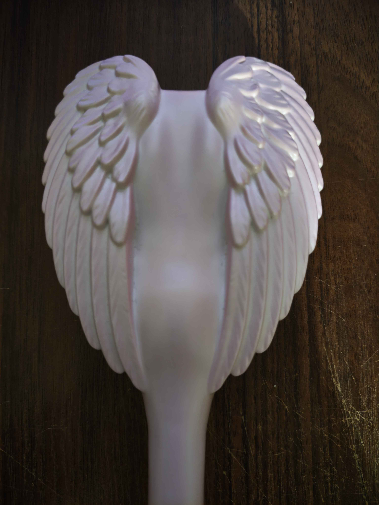

Angel Comb
При наведені на маркер з ангельською розчіскою з'являється фото янгола + два додаткові текстуровані об'єкти.
Для кожного маркера підготовлена окрема сцена на MindAR + Three.js. У сцені є три геометрії з MeshBasicMaterial і трьома текстурами: власне зображення, текстура з GitHub та текстура з довільного веб-ресурсу.

При наведені на маркер з ангельською розчіскою з'являється фото янгола + два додаткові текстуровані об'єкти.

Для маркера мікрофона використано перше зображення з котиком біля мікрофона, а також GitHub- і web-текстури.
Для маркера з піксельними котиками використано друге зображення з дівчиною під ковдрою та ще дві текстури.